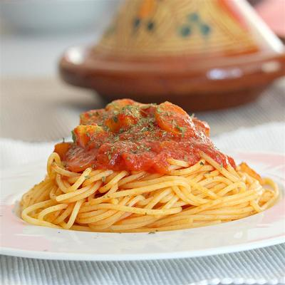

Somali Spaghetti Sauce
This is Somali-style spaghetti sauce with my own little twist. We make this once a week in our house (my daughter craves it!). I hope you enjoy this as much as we do!
info
prep : 25 mins
cook : 59 mins
total : 1 hr 29 mins
Servings : 6
yield : 6 servings
Ingredients
- 2 tablespoons chopped fresh cilantro
- 4 cloves garlic
- 1 teaspoon cumin seeds
- 1 teaspoon Himalayan pink salt
- 1 teaspoon ground turmeric
- 1 teaspoon paprika
- 1 teaspoon Italian seasoning
- 1 teaspoon salt-free seasoning blend (such as Mrs. Dash®)
- ½ teaspoon ground black pepper
- ¼ cup olive oil
- 1 pound lean ground beef
- 1 onion, diced
- 1 large potato, peeled and cubed
- 2 carrots, diced
- 2 (14 ounce) cans diced tomatoes
- 2 tablespoons water, or to taste (Optional)
- 1 (16 ounce) package angel hair pasta
Directions
step 1
Place cilantro and garlic in a food processor; pulse until finely chopped.
step 2
Toast cumin seeds in a small pot over low heat until fragrant, 2 to 3 minutes. Allow to cool, 5 minutes. Grind into a powder.
step 3
Transfer ground cumin to a small bowl. Add Himalayan pink salt, turmeric, paprika, Italian seasoning, seasoning blend, and black pepper to make seasoning mix.
step 4
Heat oil in a large pot over medium heat. Add ground beef; cook and stir until browned, about 5 minutes. Stir in 1/2 of the seasoning mix. Add onion; cook and stir until softened, about 5 minutes. Add potato and carrots. Cook, covered, stirring occasionally, until slightly softened, about 5 minutes.
step 5
Stir tomatoes into the pot and bring sauce to a boil. Reduce heat to medium-low; stir in cilantro-garlic mixture and remaining 1/2 of the seasoning mix. Simmer, stirring occasionally, until flavors combine, 30 to 40 minutes. Thin sauce with water if it seems too thick.
step 6
Bring a large pot of lightly salted water to a boil. Cook angel hair in the boiling water, stirring occasionally until tender yet firm to the bite, 4 to 5 minutes. Drain. Serve sauce over pasta.